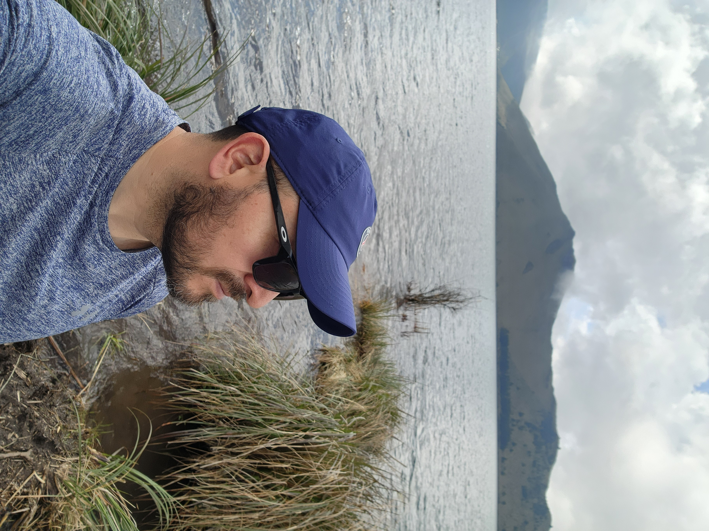

Mi Pasión por la Imagen

¡Hola! Soy Javier. Mi pasión es la fotografía de turismo.
Este proyecto nace de mi deseo de mostrar la diversidad del Ecuador: desde la capital "Quito", pasando por la imponente presencia del Cotopaxi, hasta los ríos y cascadas de la Amazonía y la biodiversidad única de Galápagos.
Mis enfoques principales:
- Fotografía de paisajes y naturaleza.
- Tips para viajes.
- Documentación de rutas turísticas.